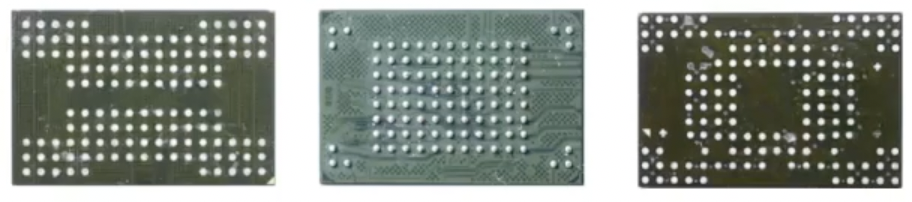
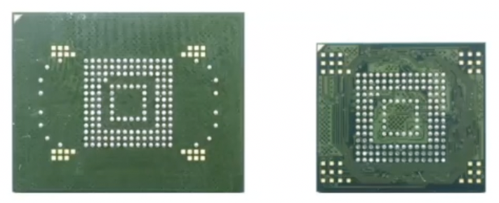
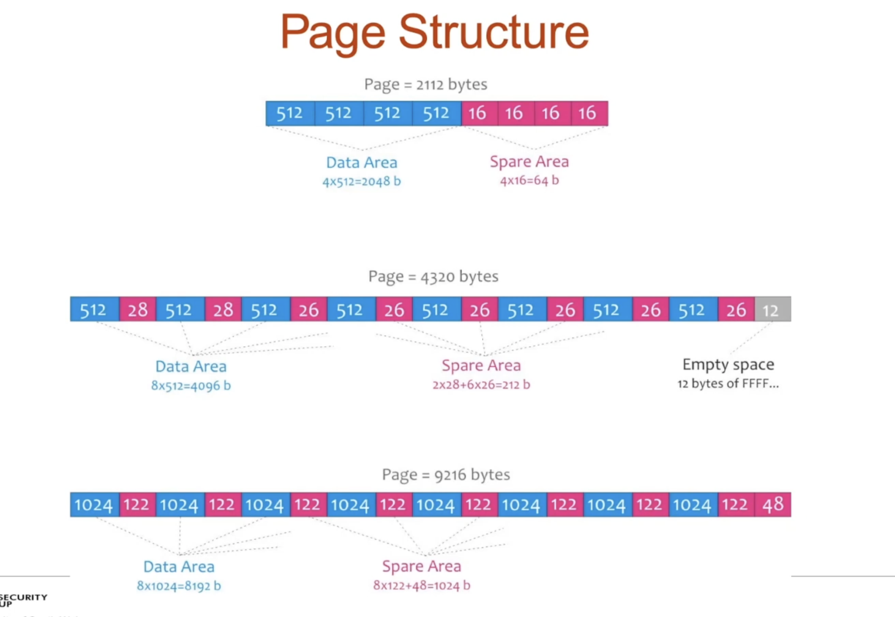
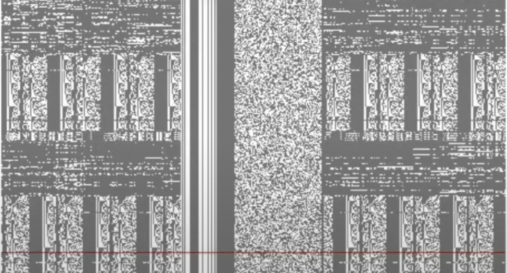
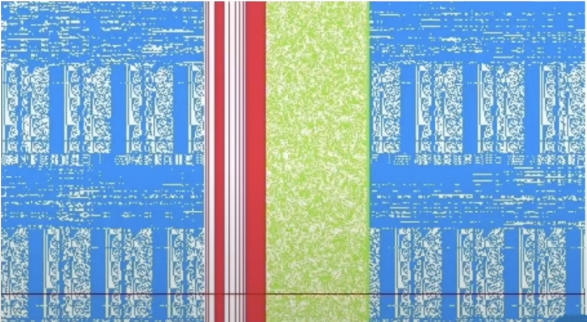
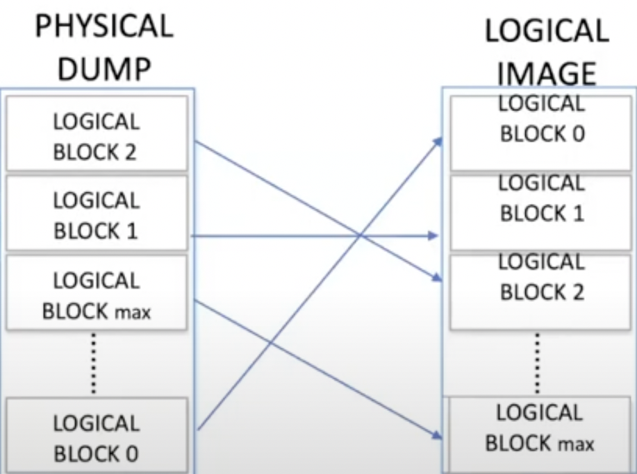

CMD42 Lock
ATA locks on HDDs. Usually 2.5'' HDD, verify there is a lock with MHDD, PC 3000. This is usually set by the user in BIOS. No sectors can be read in this case.
Wales. Investigagted a NAND eMMC (iNAND 7250A automotive, for autonomous cars) chip that could not be read. If this lock is set, the card can still be queried for reset, status, init and select, and access boot partition, RPMB and general partition area. RPMB (Replay Protect Memory Block) - first introduced in eMMC4.4. Allows storing data in a special address space that’s protected from replay attacks. Requires signing all read/write opeations. The iNAND was chipped-off and connected with a card reader and they tried to image it with FTK, but failed.
These chips are popular for many devices (except for Apple ones). QNX environment - real-time operating system. Some vehicles utilise chips and some - HDDs (like Mercedes).
Raw NAND chips vs eMMC
eMMC = controller + NAND. Raw NAND chips use NAND protocol. We need some device to emulate the controller in order to retreive the data from the NAND chip. Controller has a buffer, which stores some amount of pages. Reads/writes pages to NAND or erases blocks from NAND.

With eMMC you are forced to work through the built in controller, using eMMC protocol. However, under the hood the NAND inside still uses NAND protocol to talk to the controller.


What are these gold pads? They are techno pads used by the manufacturer to do testing, debugging. Is this a way to talk to this chip directly? The lock sits in the controller chip.

Connected to the breakput board, then, using Visual NAND reconstructor (ruSolut) - read the chip. But the data is written to NAND randomly, so, in order to reconstruct the data we need to do some sort of emulation. But we don’t have such a tool. Using this Visual NAND reconstructor we can reconstruct the controller manually. Sometimes data is writen sequencially, so, 8Kb-4Mb (page or block) can be recovered easier: SMS, chats, GPS data, emails, contacts, logs, text data, thumbnails, pictures, zip, audio, video (from the most to the least recoverable)a.

When you load this image into a Visual NAND reconstructor, you’ll get a bitmap representation of the data from the NAND chip. In order to read the contents you’ll have to determine the page layout.

Page Layout - this refers to describing the page structure and setting the borders of DATA AREA (blue), ECC (green) and SA (spare, or service, area, red).

Service Area consists of header, LBN and some other data. It’s located between data and ECC. All the three element reside in a page. A block consists of several pages. And a dump consists of many blocks.
On the block managment stage we filter out blocks without user data by the header. Blocks with user data are assembled and organised in ascending order by LBN (Logical Unit).

Physical dump consists of all data, logical - user data only.

Page (0.5-16 Kb) is the smallest read-write unit. Block (128Kb - 4Mb) is the smallest erase unit.
After getting the user data, determine the scrambling method (inverse or XOR?).
References
[1] Presentation from Magnet Summit Webinar